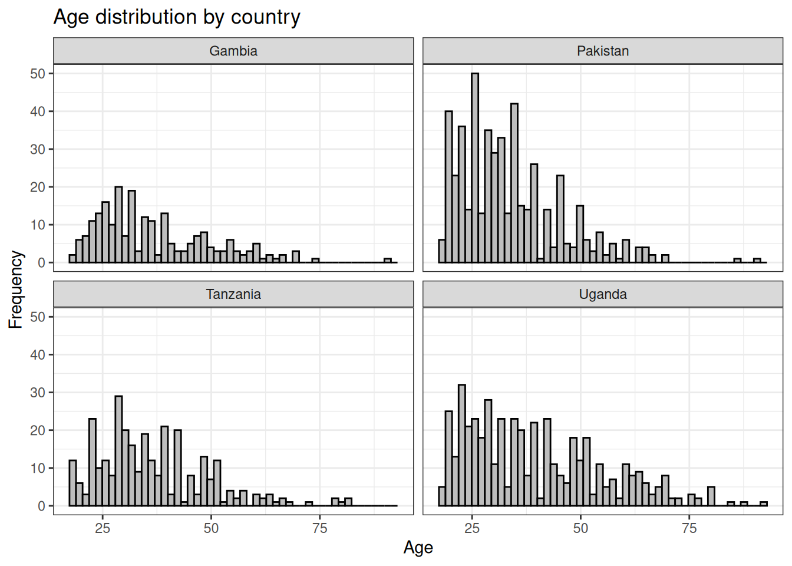
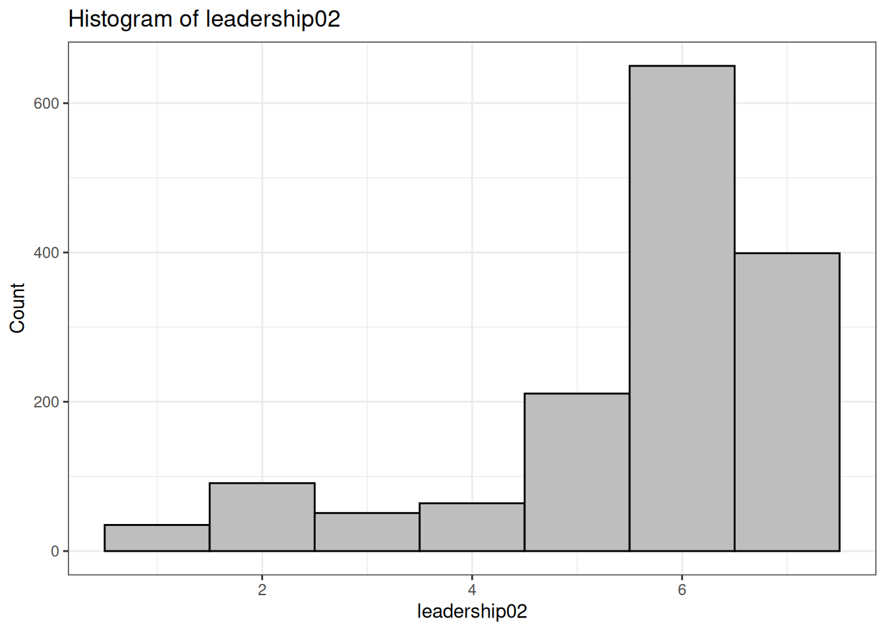
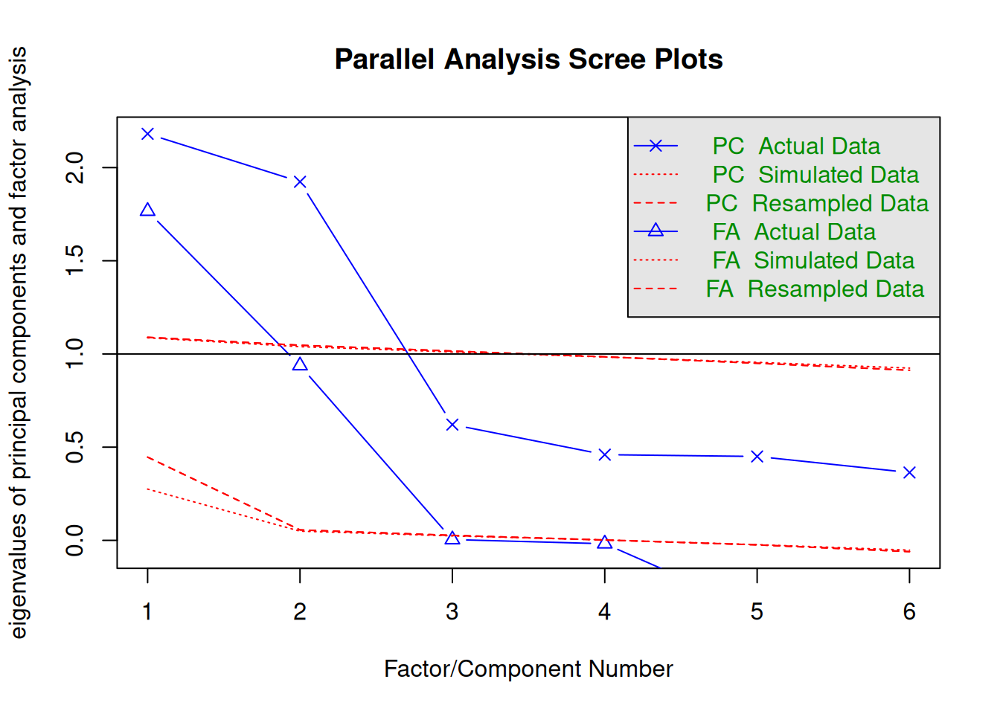

Github repo: Download all workshop contents from here.
Section 2. Introduction to the data / EDA
Cross-country survey across four countries
We will examine what people think about how group leaders should behave
Display code
## Clear R environment:rm(list=ls())## Set digit options:options(digits =2)## Set the working directory## Use the project directory (downloaded from GitHub) as the working directory:## [This is going to be different depending on your system]:setwd("~/Desktop/factor_analysis_R_workshop/")## Install/load R libraries using the "pacman" R package:## This is easier than library(package1), library(package2), etc..if (!require("pacman")) install.packages("pacman")pacman::p_load(tidyverse, lavaan, vtable, psych, scales, corrplot, ggthemes, ggcharts, patchwork)## Import the dataset that we will be using for the workshop:ds <-read_csv("data/fa_dataset.csv", show_col_types = F)## Briefly go over the dataset, variables, codebook, etc. # vtable(ds)
Demographic variables for EDA:
Country
Age
Gender
Socio-economic status
Religious affiliation
Marital status
Education
Variable: Sample size by Country
Display code
## Variable: Sample size by Countrytbl01 <-table(ds$country)tbl01
Min. 1st Qu. Median Mean 3rd Qu. Max. NA's
18 26 33 36 45 92 9
Display code
ds %>%drop_na(age)%>%ggplot(aes(x = age))+geom_histogram(color ="black",fill ="gray",bins =50)+labs(x ="Age", y ="Frequency", title ="Age distribution (full sample)")+theme_bw()
Display code
ds %>%drop_na(age)%>%ggplot(aes(x = age))+geom_histogram(color ="black",fill ="gray",bins =50)+labs(x ="Age", y ="Frequency", title ="Age distribution by country")+facet_wrap(~country, nrow =2)+theme_bw()

Variable: Gender
Display code
## Gender distribution by countrylp02 <- ds %>%drop_na(gender, age) %>%lollipop_chart(x = gender,line_color ="black",point_color ="black")+labs(y ="Frequency",x ="",title ="Gender distribution (full sample)")+theme_bw()lp02
Display code
## Age and gender by country:bp01 <- ds %>%drop_na(gender, age) %>%ggplot(aes(y = age, x = gender))+geom_boxplot(fill ="grey")+labs(y ="Age",x ="",title ="Age and gender distribution by country")+facet_wrap(~country, nrow =2)+coord_flip()+theme_bw()bp01
Bachelors Certificate Diploma High school or less
186 34 54 856
Masters or above No schooling Other/unknown
221 22 133
Display code
ds$education <-factor(ds$education, levels =c("No schooling", "High school or less","Diploma", "Certificate", "Bachelors", "Masters or above", "Other/unknown"))table(ds$education)
No schooling High school or less Diploma Certificate
22 856 54 34
Bachelors Masters or above Other/unknown
186 221 133
### Items:### To what extent do you agree with the following statements? ### (1- Strongly Disagree to 7- Strongly Agree)### Good leaders should:### Leadership item 01:### Seek out opportunities to bridge social divisions with their opponents, enemies, opposition groups, or other relevant outgroups.# Visualize with histogram using functions in R # We can use the same function for subsequent itemshistfx01 <-function(data, x_variable) {ggplot(data, aes(x =!!sym(x_variable))) +geom_histogram(fill ="gray", color ="black", bins =7) +labs(title =paste("Histogram of", x_variable),x = x_variable,y ="Count")+theme_bw()}histfx02 <-function(data, x_variable) {ggplot(data, aes(x =!!sym(x_variable))) +geom_histogram(fill ="gray", color ="black", bins =7) +labs(title =paste("Histogram of", x_variable, "by Country"),x = x_variable,y ="Count")+facet_wrap(~country, nrow =2)+theme_bw()}histfx01(ds, "leadership01")
Display code
histfx02(ds, "leadership01")
Display code
## Leadership item 02:# Demonstrate willingness to compromise with their opponents, enemies, # opposition groups, or other relevant outgroups. summary(ds$leadership02)
Min. 1st Qu. Median Mean 3rd Qu. Max. NA's
1.0 5.0 6.0 5.6 7.0 7.0 5
Display code
histfx01(ds, "leadership02")

Display code
histfx02(ds, "leadership02")
Display code
## Leadership item 03:# Try to understand and empathize with their opponents, enemies, # opposition groups, or other relevant outgroups. summary(ds$leadership03)
Min. 1st Qu. Median Mean 3rd Qu. Max. NA's
1.0 5.0 6.0 5.6 6.0 7.0 12
Display code
histfx01(ds, "leadership03")
Display code
histfx02(ds, "leadership03")
Display code
## Leadership item 04:# Try to accurately represent the interests of the communities and groups # that they belong to. summary(ds$leadership04)
Min. 1st Qu. Median Mean 3rd Qu. Max. NA's
1.0 3.0 5.0 4.4 6.0 7.0 10
Display code
histfx01(ds, "leadership04")
Display code
histfx02(ds, "leadership04")
Display code
## Leadership item 05:# Seek out opportunities to build stronger connections within the # communities and groups they belong to.summary(ds$leadership05)
Min. 1st Qu. Median Mean 3rd Qu. Max. NA's
1.0 3.0 5.0 4.6 6.0 7.0 7
Display code
histfx01(ds, "leadership05")
Display code
histfx02(ds, "leadership05")
Display code
## Leadership item 06:# Promote the interests of the communities and groups they belong to # even at the expense of other competing groups.summary(ds$leadership06)
Min. 1st Qu. Median Mean 3rd Qu. Max. NA's
1.0 2.0 4.0 4.1 6.0 7.0 4
Display code
histfx01(ds, "leadership06")
Display code
histfx02(ds, "leadership06")
Display code
## Factor Analysis of group leadership endorsement ##### Create a "leadership" dataframe:## Which has all 6 leadership items:leadership <-cbind.data.frame(ds$leadership01, ds$leadership02, ds$leadership03, ds$leadership04, ds$leadership05, ds$leadership06)names(leadership)
## Examine if factor analysis is appropriate## The general criteria is that overall MSO for the KMO test needs to be greater than 0.60. ## Based on the results (overall MSA = 0.69), factor analysis is appropriate.
Bartlett’s test of sphericity:
Display code
cortest.bartlett(leadership)
$chisq
[1] 2397
$p.value
[1] 0
$df
[1] 15
Display code
## The test is significant, again suggesting that factor analysis is appropriate.
Parallel test
Display code
parallel <-fa.parallel(leadership)

Parallel analysis suggests that the number of factors = 2 and the number of components = 2
Based on the scree plot, factor analysis with two factors is the most appropriate. We will proceed with promax rotation, which assumes that the items are inter-correlated (that is, not independent from each other).
## Create two factor structure:twofacs <-'BCL =~ leadership01+leadership02+leadership03 BBL =~ leadership04+leadership05+leadership06'## Fit the model:cfa01 <-cfa(twofacs, data = leadership, std.lv =TRUE) summary(cfa01,fit.measures =TRUE,standardized =TRUE)
lavaan 0.6.16 ended normally after 25 iterations
Estimator ML
Optimization method NLMINB
Number of model parameters 13
Number of observations 1476
Model Test User Model:
Test statistic 21.210
Degrees of freedom 8
P-value (Chi-square) 0.007
Model Test Baseline Model:
Test statistic 2402.992
Degrees of freedom 15
P-value 0.000
User Model versus Baseline Model:
Comparative Fit Index (CFI) 0.994
Tucker-Lewis Index (TLI) 0.990
Loglikelihood and Information Criteria:
Loglikelihood user model (H0) -16095.064
Loglikelihood unrestricted model (H1) -16084.459
Akaike (AIC) 32216.128
Bayesian (BIC) 32284.990
Sample-size adjusted Bayesian (SABIC) 32243.693
Root Mean Square Error of Approximation:
RMSEA 0.033
90 Percent confidence interval - lower 0.016
90 Percent confidence interval - upper 0.051
P-value H_0: RMSEA <= 0.050 0.937
P-value H_0: RMSEA >= 0.080 0.000
Standardized Root Mean Square Residual:
SRMR 0.024
Parameter Estimates:
Standard errors Standard
Information Expected
Information saturated (h1) model Structured
Latent Variables:
Estimate Std.Err z-value P(>|z|) Std.lv Std.all
BCL =~
leadership01 0.866 0.043 20.328 0.000 0.866 0.575
leadership02 1.172 0.045 26.130 0.000 1.172 0.786
leadership03 0.983 0.042 23.573 0.000 0.983 0.688
BBL =~
leadership04 1.403 0.050 28.015 0.000 1.403 0.707
leadership05 1.457 0.048 30.557 0.000 1.457 0.767
leadership06 1.662 0.051 32.867 0.000 1.662 0.820
Covariances:
Estimate Std.Err z-value P(>|z|) Std.lv Std.all
BCL ~~
BBL -0.039 0.033 -1.182 0.237 -0.039 -0.039
Variances:
Estimate Std.Err z-value P(>|z|) Std.lv Std.all
.leadership01 1.519 0.069 22.110 0.000 1.519 0.670
.leadership02 0.848 0.079 10.670 0.000 0.848 0.382
.leadership03 1.073 0.065 16.558 0.000 1.073 0.526
.leadership04 1.969 0.096 20.462 0.000 1.969 0.500
.leadership05 1.486 0.087 16.995 0.000 1.486 0.412
.leadership06 1.340 0.101 13.208 0.000 1.340 0.327
BCL 1.000 1.000 1.000
BBL 1.000 1.000 1.000
Section 5. Reliability Analysis and Visualization
Display code
## Now, we can examine the "reliability" of each constructs represented by two factors:BCL <-cbind.data.frame(ds$leadership01, ds$leadership02, ds$leadership03)alph01 <- psych::alpha(BCL)alph01
Reliability analysis
Call: psych::alpha(x = BCL)
raw_alpha std.alpha G6(smc) average_r S/N ase mean sd median_r
0.72 0.72 0.64 0.46 2.5 0.013 5.6 1.2 0.45
95% confidence boundaries
lower alpha upper
Feldt 0.69 0.72 0.74
Duhachek 0.69 0.72 0.74
Reliability if an item is dropped:
raw_alpha std.alpha G6(smc) average_r S/N alpha se var.r med.r
ds$leadership01 0.70 0.70 0.54 0.54 2.3 0.015 NA 0.54
ds$leadership02 0.55 0.55 0.38 0.38 1.2 0.023 NA 0.38
ds$leadership03 0.62 0.62 0.45 0.45 1.7 0.019 NA 0.45
Item statistics
n raw.r std.r r.cor r.drop mean sd
ds$leadership01 1503 0.78 0.77 0.56 0.48 5.8 1.5
ds$leadership02 1501 0.83 0.83 0.71 0.59 5.6 1.5
ds$leadership03 1494 0.80 0.80 0.65 0.54 5.6 1.4
Non missing response frequency for each item
1 2 3 4 5 6 7 miss
ds$leadership01 0.04 0.05 0.02 0.03 0.09 0.42 0.36 0.00
ds$leadership02 0.02 0.06 0.03 0.04 0.14 0.43 0.27 0.00
ds$leadership03 0.02 0.05 0.03 0.05 0.17 0.43 0.25 0.01
Display code
summary(alph01)
Reliability analysis
raw_alpha std.alpha G6(smc) average_r S/N ase mean sd median_r
0.72 0.72 0.64 0.46 2.5 0.013 5.6 1.2 0.45
Reliability analysis
Call: psych::alpha(x = BBL)
raw_alpha std.alpha G6(smc) average_r S/N ase mean sd median_r
0.81 0.81 0.74 0.59 4.3 0.0085 4.4 1.7 0.58
95% confidence boundaries
lower alpha upper
Feldt 0.79 0.81 0.83
Duhachek 0.79 0.81 0.83
Reliability if an item is dropped:
raw_alpha std.alpha G6(smc) average_r S/N alpha se var.r med.r
ds$leadership04 0.77 0.77 0.63 0.63 3.4 0.012 NA 0.63
ds$leadership05 0.74 0.74 0.58 0.58 2.8 0.014 NA 0.58
ds$leadership06 0.71 0.71 0.55 0.55 2.4 0.015 NA 0.55
Item statistics
n raw.r std.r r.cor r.drop mean sd
ds$leadership04 1496 0.84 0.83 0.69 0.63 4.4 2.0
ds$leadership05 1499 0.85 0.85 0.74 0.66 4.6 1.9
ds$leadership06 1502 0.87 0.87 0.77 0.69 4.1 2.0
Non missing response frequency for each item
1 2 3 4 5 6 7 miss
ds$leadership04 0.11 0.14 0.10 0.1 0.15 0.27 0.14 0.01
ds$leadership05 0.07 0.14 0.09 0.1 0.16 0.28 0.15 0.00
ds$leadership06 0.13 0.18 0.11 0.1 0.13 0.24 0.11 0.00
Display code
summary(alph02)
Reliability analysis
raw_alpha std.alpha G6(smc) average_r S/N ase mean sd median_r
0.81 0.81 0.74 0.59 4.3 0.0085 4.4 1.7 0.58
Display code
## We can also visualize the two constructs and how they differ across countries:## Create the actual construct, which is the average of three items:ds$BCL <- (ds$leadership01+ds$leadership02+ds$leadership03)/3ds$BBL <- (ds$leadership04+ds$leadership05+ds$leadership06)/3## Visualize barrier crossing leadership:summary(ds$BCL)
Min. 1st Qu. Median Mean 3rd Qu. Max. NA's
1.0 5.0 6.0 5.7 6.3 7.0 16
Min. 1st Qu. Median Mean 3rd Qu. Max. NA's
1.0 3.0 4.7 4.3 6.0 7.0 19
Display code
histfx01(ds, "BBL")
Display code
histfx02(ds, "BBL")
Display code
## We can also examine how BCL and BBL vary by country and gender## (or any other variable that we might be curious about)bp02 <- ds %>%drop_na(BCL, BBL, gender) %>%ggplot(aes(y = BCL, x = country))+geom_boxplot(fill ="grey")+labs(y ="BCL",x ="",title ="Endorsement of BCL by country")+coord_flip()+theme_bw()bp02
Display code
bp03 <- ds %>%drop_na(BCL, BBL, gender) %>%ggplot(aes(y = BCL, x = gender))+geom_boxplot(fill ="grey")+labs(y ="BCL",x ="",title ="Gender differences in endorsement of BCL by country")+facet_wrap(~country, nrow =2)+coord_flip()+theme_bw()bp03
Display code
bp04 <- ds %>%drop_na(BCL, BBL, gender) %>%ggplot(aes(y = BBL, x = country))+geom_boxplot(fill ="grey")+labs(y ="BBL",x ="",title ="Endorsement of BBL by country")+coord_flip()+theme_bw()bp04
Display code
bp05 <- ds %>%drop_na(BCL, BBL, gender) %>%ggplot(aes(y = BBL, x = gender))+geom_boxplot(fill ="grey")+labs(y ="BBL",x ="",title ="Gender differences in endorsement of BBL by country")+facet_wrap(~country, nrow =2)+coord_flip()+theme_bw()bp05
Display code
#### End of File ####
Source Code
---title: "Workshop: Factor Analysis in R"author: Gagan Atreyadate: "February 1, 2024"format: html: toc: true toc-location: left toc-depth: 4 theme: lumen fontsize: large code-fold: true code-tools: true code-summary: "Display code" code-overflow: wrapeditor: markdown: wrap: 72---# **Section 1. Introduction **- This workshop will cover the basics of Factor Analysis (both Exploratory and Confirmatory) in the R programming language- Ideally for people with beginner/intermediate familiarity with R and/or interest in psychometrics / survey data analysis - About me: Data Scientist / Quantitative Social Scientist based in Los Angeles, California- [Github](https://github.com/atreyagagan){target="blank"}- [Linkedin](https://www.linkedin.com/in/gagan-atreya-1170202a2/){target="blank"}- [Email: atreyagagan@gmail.com](mailto:atreyagagan@gmail.com?){target="blank"}## Data and code for this workshop - Github repo: Download all workshop contents from [here](https://github.com/atreyagagan/Factor_Analysis_R_Workshop){target="blank"}. {#id .class width=60% height=60%}# **Section 2. Introduction to the data / EDA **- Cross-country survey across four countries- We will examine what people think about how group leaders should behave```{r, error = F, message = F, warning = F}## Clear R environment:rm(list=ls())## Set digit options:options(digits =2)## Set the working directory## Use the project directory (downloaded from GitHub) as the working directory:## [This is going to be different depending on your system]:setwd("~/Desktop/factor_analysis_R_workshop/")## Install/load R libraries using the "pacman" R package:## This is easier than library(package1), library(package2), etc..if (!require("pacman")) install.packages("pacman")pacman::p_load(tidyverse, lavaan, vtable, psych, scales, corrplot, ggthemes, ggcharts, patchwork)## Import the dataset that we will be using for the workshop:ds <-read_csv("data/fa_dataset.csv", show_col_types = F)## Briefly go over the dataset, variables, codebook, etc. # vtable(ds)```## **Demographic variables for EDA:**- Country- Age- Gender- Socio-economic status- Religious affiliation- Marital status- Education### Variable: Sample size by Country```{r}## Variable: Sample size by Countrytbl01 <-table(ds$country)tbl01## Filter individual country datasets:dsgmb <- ds %>%filter(country =="Gambia")dspak <- ds %>%filter(country =="Pakistan")dstza <- ds %>%filter(country =="Tanzania")dsuga <- ds %>%filter(country =="Uganda")## Plot: Sample size by country:lp01 <- ds %>%lollipop_chart(x = country,line_color ="black",point_color ="black")+labs(y ="Frequency",x ="",title ="Sample size by country")+theme_bw()lp01```### Variable: Age ```{r, error = F, message = F, warning = F}## Variable: Agesummary(ds$age)ds %>%drop_na(age)%>%ggplot(aes(x = age))+geom_histogram(color ="black",fill ="gray",bins =50)+labs(x ="Age", y ="Frequency", title ="Age distribution (full sample)")+theme_bw()ds %>%drop_na(age)%>%ggplot(aes(x = age))+geom_histogram(color ="black",fill ="gray",bins =50)+labs(x ="Age", y ="Frequency", title ="Age distribution by country")+facet_wrap(~country, nrow =2)+theme_bw()```### Variable: Gender```{r, error = F, message = F, warning = F}## Gender distribution by countrylp02 <- ds %>%drop_na(gender, age) %>%lollipop_chart(x = gender,line_color ="black",point_color ="black")+labs(y ="Frequency",x ="",title ="Gender distribution (full sample)")+theme_bw()lp02## Age and gender by country:bp01 <- ds %>%drop_na(gender, age) %>%ggplot(aes(y = age, x = gender))+geom_boxplot(fill ="grey")+labs(y ="Age",x ="",title ="Age and gender distribution by country")+facet_wrap(~country, nrow =2)+coord_flip()+theme_bw()bp01```### Variable: Socio-economic status```{r, error = F, message = F, warning = F}ds %>%drop_na(ses) %>%lollipop_chart(x = ses,line_color ="black",point_color ="black")+labs(y ="Frequency",x ="",title ="Socioeconomic status (full sample)")+theme_bw()sesgmb <- dsgmb %>%drop_na(ses) %>%lollipop_chart(x = ses,line_color ="black",point_color ="black")+labs(y ="Frequency",x ="",title ="Gambia")+theme_bw()sespak <- dspak %>%drop_na(ses) %>%lollipop_chart(x = ses,line_color ="black",point_color ="black")+labs(y ="Frequency",x ="",title ="Pakistan")+theme_bw()sestza <- dstza %>%drop_na(ses) %>%lollipop_chart(x = ses,line_color ="black",point_color ="black")+labs(y ="Frequency",x ="",title ="Tanzania")+theme_bw()sesuga <- dsuga %>%drop_na(ses) %>%lollipop_chart(x = ses,line_color ="black",point_color ="black")+labs(y ="Frequency",x ="",title ="Uganda")+theme_bw()## All four plots together:sesplot <- (sesgmb | sespak) / (sestza | sesuga) sesplot +plot_annotation("Socio-economic status by country")```### Variable: Marital status```{r, error = F, message = F, warning = F}ds %>%drop_na(married) %>%lollipop_chart(x = married,line_color ="black",point_color ="black")+labs(y ="Frequency",x ="",title ="Marital status (full sample)")+theme_bw()maritalgmb <- dsgmb %>%drop_na(married) %>%lollipop_chart(x = married,line_color ="black",point_color ="black")+labs(y ="Frequency",x ="",title ="Gambia")+theme_bw()maritalpak <- dspak %>%drop_na(married) %>%lollipop_chart(x = married,line_color ="black",point_color ="black")+labs(y ="Frequency",x ="",title ="Pakistan")+theme_bw()maritaltza <- dstza %>%drop_na(married) %>%lollipop_chart(x = married,line_color ="black",point_color ="black")+labs(y ="Frequency",x ="",title ="Tanzania")+theme_bw()maritaluga <- dsuga %>%drop_na(married) %>%lollipop_chart(x = married,line_color ="black",point_color ="black")+labs(y ="Frequency",x ="",title ="Uganda")+theme_bw()## All four plots together:maritalplot <- (maritalgmb | maritalpak) / (maritaltza | maritaluga) maritalplot +plot_annotation("Marital status by country")```### Variable: Religious affiliation```{r, error = F, message = F, warning = F}lp05 <- ds %>%drop_na(religion) %>%lollipop_chart(x = religion,line_color ="black",point_color ="black")+labs(y ="Frequency",x ="",title ="Religious distribution (full sample)")+theme_bw()lp05religiongmb <- dsgmb %>%drop_na(religion) %>%lollipop_chart(x = religion,line_color ="black",point_color ="black")+labs(y ="Frequency",x ="",title ="Gambia")+theme_bw()religionpak <- dspak %>%drop_na(religion) %>%lollipop_chart(x = religion,line_color ="black",point_color ="black")+labs(y ="Frequency",x ="",title ="Pakistan")+theme_bw()religiontza <- dstza %>%drop_na(religion) %>%lollipop_chart(x = religion,line_color ="black",point_color ="black")+labs(y ="Frequency",x ="",title ="Tanzania")+theme_bw()religionuga <- dsuga %>%drop_na(religion) %>%lollipop_chart(x = religion,line_color ="black",point_color ="black")+labs(y ="Frequency",x ="",title ="Uganda")+theme_bw()## All four plots together:religionplot <- (religiongmb | religionpak) / (religiontza | religionuga) religionplot +plot_annotation("Religious affiliation by country")```### Variable: Education```{r, error = F, message = F, warning = F}table(ds$education)ds$education <-factor(ds$education, levels =c("No schooling", "High school or less","Diploma", "Certificate", "Bachelors", "Masters or above", "Other/unknown"))table(ds$education)lp05 <- ds %>%drop_na(education) %>%lollipop_chart(x = education,line_color ="black",point_color ="black")+labs(y ="Frequency",x ="",title ="Education (full sample)")+theme_bw()lp05educationgmb <- dsgmb %>%drop_na(education) %>%lollipop_chart(x = education,line_color ="black",point_color ="black")+labs(y ="Frequency",x ="",title ="Gambia")+theme_bw()educationpak <- dspak %>%drop_na(education) %>%lollipop_chart(x = education,line_color ="black",point_color ="black")+labs(y ="Frequency",x ="",title ="Pakistan")+theme_bw()educationtza <- dstza %>%drop_na(education) %>%lollipop_chart(x = education,line_color ="black",point_color ="black")+labs(y ="Frequency",x ="",title ="Tanzania")+theme_bw()educationuga <- dsuga %>%drop_na(education) %>%lollipop_chart(x = education,line_color ="black",point_color ="black")+labs(y ="Frequency",x ="",title ="Uganda")+theme_bw()## All four plots together:educationplot <- (educationgmb | educationpak) / (educationtza | educationuga) educationplot +plot_annotation("Education by country")```# **Section 3. Exploratory Factor Analysis** ```{r, error = F, message = F, warning = F}### Items:### To what extent do you agree with the following statements? ### (1- Strongly Disagree to 7- Strongly Agree)### Good leaders should:### Leadership item 01:### Seek out opportunities to bridge social divisions with their opponents, enemies, opposition groups, or other relevant outgroups.# Visualize with histogram using functions in R # We can use the same function for subsequent itemshistfx01 <-function(data, x_variable) {ggplot(data, aes(x =!!sym(x_variable))) +geom_histogram(fill ="gray", color ="black", bins =7) +labs(title =paste("Histogram of", x_variable),x = x_variable,y ="Count")+theme_bw()}histfx02 <-function(data, x_variable) {ggplot(data, aes(x =!!sym(x_variable))) +geom_histogram(fill ="gray", color ="black", bins =7) +labs(title =paste("Histogram of", x_variable, "by Country"),x = x_variable,y ="Count")+facet_wrap(~country, nrow =2)+theme_bw()}histfx01(ds, "leadership01")histfx02(ds, "leadership01")## Leadership item 02:# Demonstrate willingness to compromise with their opponents, enemies, # opposition groups, or other relevant outgroups. summary(ds$leadership02)histfx01(ds, "leadership02")histfx02(ds, "leadership02")## Leadership item 03:# Try to understand and empathize with their opponents, enemies, # opposition groups, or other relevant outgroups. summary(ds$leadership03)histfx01(ds, "leadership03")histfx02(ds, "leadership03")## Leadership item 04:# Try to accurately represent the interests of the communities and groups # that they belong to. summary(ds$leadership04)histfx01(ds, "leadership04")histfx02(ds, "leadership04")## Leadership item 05:# Seek out opportunities to build stronger connections within the # communities and groups they belong to.summary(ds$leadership05)histfx01(ds, "leadership05")histfx02(ds, "leadership05")## Leadership item 06:# Promote the interests of the communities and groups they belong to # even at the expense of other competing groups.summary(ds$leadership06)histfx01(ds, "leadership06")histfx02(ds, "leadership06")## Factor Analysis of group leadership endorsement ##### Create a "leadership" dataframe:## Which has all 6 leadership items:leadership <-cbind.data.frame(ds$leadership01, ds$leadership02, ds$leadership03, ds$leadership04, ds$leadership05, ds$leadership06)names(leadership)## Remove "ds$" from the column names:names(leadership) <-sub('ds\\$', '', names(leadership))names(leadership)## Omit NA or missing values:leadership <-na.omit(leadership)## Examine correlation matrix:mtx01 <-cor(leadership[, c(1:6)])```## Visualize correlation matrix:```{r, error = F, message = F, warning = F}corrplot(mtx01, method ="number", number.cex =0.7,col=c("white", "darkred", "red","darkgrey", "blue", "darkblue"))```## Kaiser-Meyer-Olkin factor adequacy test```{r, error = F, message = F, warning = F}KMO(r=cor(leadership))## Examine if factor analysis is appropriate## The general criteria is that overall MSO for the KMO test needs to be greater than 0.60. ## Based on the results (overall MSA = 0.69), factor analysis is appropriate.```## Bartlett's test of sphericity:```{r, error = F, message = F, warning = F}cortest.bartlett(leadership)## The test is significant, again suggesting that factor analysis is appropriate.```## Parallel test```{r, error = F, message = F, warning = F}parallel <-fa.parallel(leadership)```Based on the scree plot, factor analysis with two factors is the most appropriate. We will proceed with promax rotation, which assumes that the items are inter-correlated (that is, not independent from each other).## Two factor model:```{r, error = F, message = F, warning = F}fit01 <-factanal(leadership, 2, rotation="promax")fit01```p-value > 0.05 suggests that two factors is sufficient. We cannot reject the null hypothesis that two factors captures "full dimensionality" in the dataset## Plot loadings for each factor```{r, error = F, message = F, warning = F}plot( fit01$loadings[, 1], fit01$loadings[, 2],xlab ="Factor 1", ylab ="Factor 2", ylim =c(-1, 1),xlim =c(-1, 1),main ="Factor analysis of prostate data")abline(h =0, v =0)#add column names to each pointtext( fit01$loadings[, 1] -0.128, fit01$loadings[, 2] +0.128,colnames(leadership),col ="blue")```**We can observe a two factor structure **Factor 1: leadership01, leadership02, leadership03Factor 2: leadership04, leadership05, leadership06Refer to codebook to see if these factors are "coherent"Factor 01:Item 1:Seek out opportunities to bridge social divisions with their opponents, enemies, opposition groups, or other relevant outgroups.Item 2:Demonstrate willingness to compromise with their opponents, enemies, opposition groups, or other relevant outgroups. Item 3:Try to understand and empathize with their opponents, enemies, pposition groups, or other relevant outgroups. Call this factor: **"Barrier Crossing Leadership"**Factor 02:Item 1:Try to accurately represent the interests of the communities and groups that they belong to. item 2:Seek out opportunities to build stronger connections within the communities and groups they belong to.item 3:Promote the interests of the communities and groups they belong to even at the expense of other competing groups.Call this factor: **"Barrier bound leadership"**The promax rotated FA output suggests that there are two factors:Factor 1 = Barrier Crossing Leadeship (BCL)"Factor 2 = Barrier Bound Leadership (BBL)"The two factors cumulatively explain 53% of the variance in the data. Factor 1 explains 29% of the variance, Factor 2 explains 24%# **Section 4. Confirmatory Factor Analysis**```{r, error = F, message = F, warning = F}# correlated two factor solution, marker methodnames(leadership)## Create two factor structure:twofacs <-'BCL =~ leadership01+leadership02+leadership03 BBL =~ leadership04+leadership05+leadership06'## Fit the model:cfa01 <-cfa(twofacs, data = leadership, std.lv =TRUE) summary(cfa01,fit.measures =TRUE,standardized =TRUE)```# **Section 5. Reliability Analysis and Visualization**```{r, error = F, message = F, warning = F}## Now, we can examine the "reliability" of each constructs represented by two factors:BCL <-cbind.data.frame(ds$leadership01, ds$leadership02, ds$leadership03)alph01 <- psych::alpha(BCL)alph01summary(alph01)BBL <-cbind.data.frame(ds$leadership04, ds$leadership05, ds$leadership06)alph02 <- psych::alpha(BBL)alph02summary(alph02)## We can also visualize the two constructs and how they differ across countries:## Create the actual construct, which is the average of three items:ds$BCL <- (ds$leadership01+ds$leadership02+ds$leadership03)/3ds$BBL <- (ds$leadership04+ds$leadership05+ds$leadership06)/3## Visualize barrier crossing leadership:summary(ds$BCL)histfx01(ds, "BCL")histfx02(ds, "BCL")## Visualize barrier bound leadership:summary(ds$BBL)histfx01(ds, "BBL")histfx02(ds, "BBL")## We can also examine how BCL and BBL vary by country and gender## (or any other variable that we might be curious about)bp02 <- ds %>%drop_na(BCL, BBL, gender) %>%ggplot(aes(y = BCL, x = country))+geom_boxplot(fill ="grey")+labs(y ="BCL",x ="",title ="Endorsement of BCL by country")+coord_flip()+theme_bw()bp02bp03 <- ds %>%drop_na(BCL, BBL, gender) %>%ggplot(aes(y = BCL, x = gender))+geom_boxplot(fill ="grey")+labs(y ="BCL",x ="",title ="Gender differences in endorsement of BCL by country")+facet_wrap(~country, nrow =2)+coord_flip()+theme_bw()bp03bp04 <- ds %>%drop_na(BCL, BBL, gender) %>%ggplot(aes(y = BBL, x = country))+geom_boxplot(fill ="grey")+labs(y ="BBL",x ="",title ="Endorsement of BBL by country")+coord_flip()+theme_bw()bp04bp05 <- ds %>%drop_na(BCL, BBL, gender) %>%ggplot(aes(y = BBL, x = gender))+geom_boxplot(fill ="grey")+labs(y ="BBL",x ="",title ="Gender differences in endorsement of BBL by country")+facet_wrap(~country, nrow =2)+coord_flip()+theme_bw()bp05#### End of File ####```